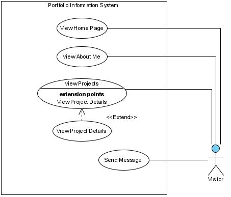
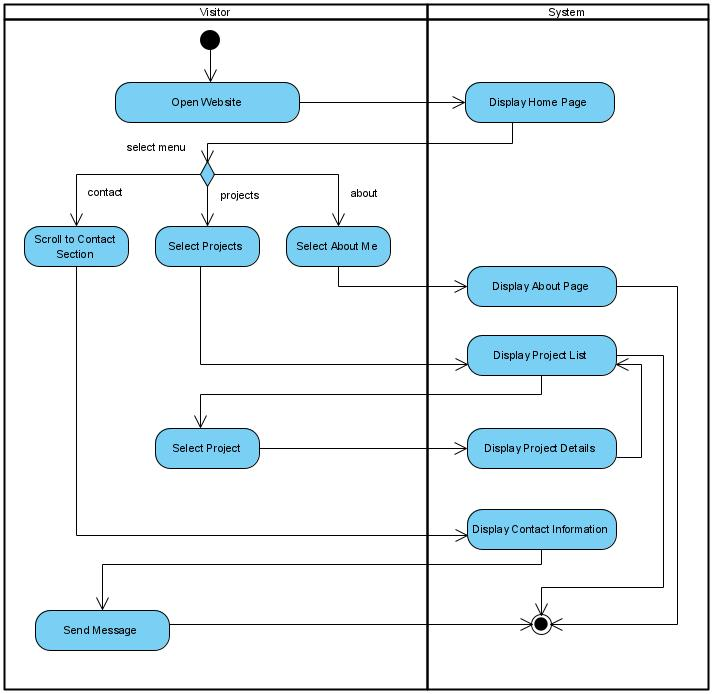
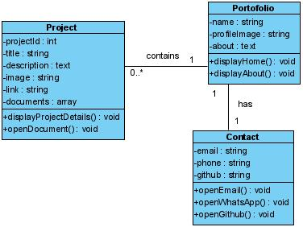
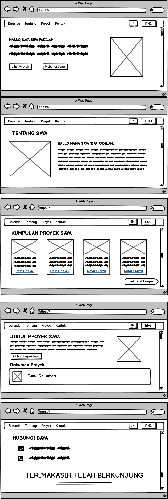

Pendahuluan
Perkembangan teknologi informasi yang pesat telah mendorong perubahan cara seseorang memperkenalkan diri secara profesional di dunia digital. Bagi seorang pengembang perangkat lunak, kemampuan teknis tidak cukup hanya dibuktikan melalui dokumen Curriculum Vitae (CV) konvensional. Dibutuhkan sebuah media representasi yang dapat menampilkan kompetensi, karya, dan kepribadian secara nyata dan interaktif.
Website portofolio pribadi hadir sebagai solusi atas kebutuhan tersebut. Sebagaimana dinyatakan dalam penelitian Wirastuti dkk. [1], portofolio berbasis website memberikan kemudahan akses dan efisiensi penyimpanan dibandingkan portofolio dalam format konvensional. Pengguna hanya perlu mengakses satu tautan untuk melihat seluruh informasi yang disajikan.
Pemilihan HTML dan CSS sebagai teknologi utama didasarkan pada karakteristiknya yang ringan, mudah dipublikasikan, dan tidak memerlukan server backend. Hal ini sejalan dengan kajian Jihadi dan Syarabil [2] yang menyatakan bahwa HTML dan CSS merupakan fondasi utama pengembangan tampilan web yang efektif dalam menyampaikan konten secara terstruktur dan visual.
Website yang dibangun selanjutnya dipublikasikan menggunakan layanan GitHub Pages, yaitu platform hosting statis gratis yang disediakan oleh GitHub dan memungkinkan pengguna untuk menerbitkan proyek berbasis HTML langsung dari repositori.
Artikel ini bertujuan untuk mendokumentasikan proses perancangan website portofolio pribadi secara sistematis, mulai dari analisis kebutuhan, pemodelan UML, perancangan wireframe menggunakan Balsamiq, hingga implementasi dan pengujian hasil akhir.
Landasan Teori
2.1 Website Portofolio
Website portofolio merupakan representasi digital dari kemampuan dan pencapaian seseorang yang dapat diakses secara daring. Dalam konteks pengembang perangkat lunak, portofolio berperan penting dalam membangun kredibilitas dan menarik perhatian calon klien maupun perekrut [3]. Sebuah portofolio yang baik setidaknya mencakup informasi tentang diri pengembang, keahlian teknis, proyek yang pernah dikerjakan, serta informasi kontak.
2.2 HTML dan CSS
HyperText Markup Language (HTML) adalah bahasa markup standar untuk membangun struktur halaman web. Sementara itu, Cascading Style Sheets (CSS) berfungsi untuk mengontrol tampilan visual elemen-elemen HTML, seperti tata letak, warna, tipografi, dan ukuran [4]. Kombinasi keduanya memungkinkan pemisahan antara konten dan presentasi, sehingga pemeliharaan dan pengembangan lebih efisien.
2.3 GitHub Pages
GitHub Pages adalah layanan hosting statis yang disediakan oleh GitHub secara gratis. Layanan ini memungkinkan pengguna menerbitkan file HTML, CSS, dan JavaScript langsung dari repositori GitHub tanpa memerlukan konfigurasi server. Setiap perubahan yang didorong (push) ke repositori akan langsung diperbarui pada website yang diterbitkan.
2.4 Unified Modeling Language (UML)
UML adalah bahasa pemodelan visual yang digunakan untuk menggambarkan struktur dan perilaku suatu sistem perangkat lunak. Dalam perancangan sistem berbasis web, tiga diagram UML yang umum digunakan adalah Use Case Diagram untuk menggambarkan interaksi pengguna dengan sistem, Activity Diagram untuk menggambarkan alur proses, dan Class Diagram untuk menggambarkan struktur data dan relasi antar kelas [5].
2.5 Balsamiq Wireframes
Balsamiq Wireframes adalah alat perancangan antarmuka berbasis prototipe rendah (low-fidelity) yang memungkinkan perancang membuat sketsa tata letak halaman secara cepat sebelum masuk ke tahap implementasi. Balsamiq menyediakan berbagai komponen antarmuka siap pakai yang mempermudah visualisasi struktur halaman tanpa perlu memikirkan detail estetika di tahap awal perancangan.
Metode Perancangan
Perancangan website portofolio ini mengikuti pendekatan pengembangan berbasis desain (design-based development) dengan tahapan sebagai berikut:
TABEL 1 — TAHAPAN PERANCANGAN SISTEM
| No | Tahap | Aktivitas | Alat / Metode |
|---|---|---|---|
| 1 | Analisis Kebutuhan | Identifikasi fitur dan kebutuhan pengguna | Observasi, studi literatur |
| 2 | Pemodelan Sistem | Perancangan Use Case, Activity, dan Class Diagram | UML (Visual Paradigm) |
| 3 | Perancangan Antarmuka | Pembuatan wireframe halaman-halaman utama | Balsamiq Wireframes |
| 4 | Implementasi | Penulisan kode HTML dan CSS | VS Code, HTML5, CSS3 |
| 5 | Pengujian | Uji tampilan pada berbagai perangkat | Browser, DevTools |
| 6 | Publikasi | Penerbitan website ke internet | GitHub Pages |
Analisis Kebutuhan
Berdasarkan tujuan pembuatan website, terdapat dua jenis pengguna yang berinteraksi dengan sistem, yaitu Pengunjung (publik umum, rekruter, atau calon klien) dan Pemilik (pengembang itu sendiri selaku admin).
4.1 Kebutuhan Fungsional
Website portofolio dirancang dengan fitur-fitur berikut:
| Kode | Fitur | Deskripsi |
|---|---|---|
| F-01 | Halaman Beranda | Menampilkan identitas dan deskripsi singkat pengembang |
| F-02 | Halaman About Me | Menampilkan latar belakang pendidikan dan keahlian |
| F-03 | Halaman Projects | Menampilkan daftar proyek beserta deskripsi dan tautan |
| F-04 | Halaman Contact | Menyediakan informasi dan formulir kontak |
| F-05 | Navigasi Bahasa | Mendukung tampilan dalam Bahasa Indonesia dan Inggris |
4.2 Kebutuhan Non-Fungsional
| Aspek | Kebutuhan |
|---|---|
| Performa | Waktu muat halaman di bawah 3 detik |
| Responsivitas | Tampilan menyesuaikan layar desktop dan mobile |
| Kompatibilitas | Berjalan baik di Chrome, Firefox, dan Edge |
| Aksesibilitas | Kontras warna memadai dan navigasi keyboard-friendly |
Pemodelan Sistem (UML)
5.1 Use Case Diagram
Use Case Diagram menggambarkan interaksi antara aktor (pengguna) dengan fungsi-fungsi utama yang tersedia dalam sistem. Terdapat dua aktor pada sistem ini, yaitu Pengunjung dan Pemilik Website. Pengunjung dapat mengakses seluruh halaman dan menghubungi pemilik, sementara pemilik dapat memperbarui konten website melalui repositori GitHub [6].

5.2 Activity Diagram
Activity Diagram menggambarkan alur aktivitas pengguna saat mengunjungi website. Alur dimulai dari membuka website, memilih halaman yang diinginkan melalui navigasi, hingga melakukan interaksi seperti mengklik proyek atau mengisi formulir kontak. Activity Diagram membantu dalam memahami alur logis sistem secara keseluruhan [5].

5.3 Class Diagram
Meskipun website ini bersifat statis (tidak menggunakan bahasa pemrograman sisi server),
Class Diagram tetap digunakan untuk memodelkan struktur konten secara konseptual. Kelas
utama yang diidentifikasi meliputi: Page (halaman web), Section
(bagian konten), Project (data proyek), dan ContactForm
(komponen kontak). Pemodelan ini berguna sebagai acuan struktur HTML dan penamaan kelas CSS.

Perancangan Antarmuka (Wireframe)
Perancangan antarmuka dilakukan menggunakan Balsamiq Wireframes sebelum memasuki tahap implementasi. Wireframe berfungsi sebagai cetak biru visual yang menggambarkan tata letak elemen-elemen utama pada setiap halaman tanpa terikat pada detail estetika seperti warna dan tipografi.
6.1 Identitas Visual
Setelah wireframe disetujui, identitas visual ditentukan dengan ketentuan sebagai berikut:
| Elemen | Pilihan | Alasan |
|---|---|---|
| Skema Warna Utama | Hitam (#0a0a0a) & Putih (#f5f5f5) | Memberikan kesan profesional, bersih, dan modern |
| Tipografi Judul | Sans-serif tebal (bold) | Keterbacaan tinggi dan berkesan kuat |
| Tipografi Isi | Sans-serif reguler | Nyaman dibaca pada layar digital |
| Tombol CTA | Hitam solid & outline putih | Kontras jelas, mudah diidentifikasi |
| Layout | Dua kolom (teks kiri, foto kanan) | Tata letak standar portofolio yang intuitif |
6.2 Wireframe Halaman Beranda
Halaman beranda dirancang dengan navigasi di bagian atas (Home, About Me, Projects, Contact) dan tombol toggle bahasa (ID/EN). Bagian utama (hero section) menampilkan nama pengembang, deskripsi singkat, dua tombol aksi, serta foto profil di sisi kanan.

Implementasi
Implementasi dilakukan menggunakan editor kode Visual Studio Code dengan ekstensi Live Server untuk pengujian real-time. Struktur file yang digunakan adalah sebagai berikut:
portofolio/
├── index.html ← Halaman utama
├── project-detail.html ← Halaman detail proyek
├── css/
└── base.css ← Gaya visual umum
└── navbar.css ← Gaya visual navbar
└── home.css ← Gaya visual beranda
└── about.css ← Gaya visual tentang
└── projects.css ← Gaya visual proyek
└── project-detail.css ← Gaya visual detail proyek
└── contact.css ← Gaya visual kontak
└── style.css ← Seluruh gaya visual
├── js/
└── script.js ← Toggle bahasa & interaksi
└── projects.js ← Interaksi proyek
└── assets/
├── docs/ ← File Dokumen
└── img/ ← Foto & gambar
Website diimplementasikan dengan pendekatan semantic HTML5, menggunakan elemen seperti
<header>, <nav>, <main>,
<section>, dan <footer> untuk menjaga aksesibilitas
dan keterbacaan kode. Tata letak menggunakan kombinasi CSS Flexbox dan Grid untuk
menghasilkan desain yang responsif.
7.1 Hasil Implementasi
Berikut adalah tampilan website portofolio yang telah diimplementasikan. Halaman beranda menampilkan nama, deskripsi profesi, serta dua tombol navigasi utama ("Lihat Proyek" dan "Hubungi Saya") di sisi kiri, dengan foto profil di sisi kanan dalam bingkai dengan sudut membulat.

7.2 Publikasi ke GitHub Pages
Setelah implementasi selesai, seluruh file proyek diunggah ke repositori GitHub.
Layanan GitHub Pages kemudian diaktifkan melalui pengaturan repositori dengan memilih
branch main sebagai sumber halaman. Website dapat diakses melalui URL
dengan format https://[username].github.io/[nama-repositori].
Pengujian
Pengujian dilakukan menggunakan metode Black Box Testing, yaitu pengujian fungsionalitas berdasarkan keluaran yang dihasilkan tanpa memperhatikan kode program di dalamnya [7]. Selain itu, dilakukan pula pengujian responsivitas pada berbagai ukuran layar.
TABEL 2 — HASIL PENGUJIAN BLACK BOX
| No | Fitur yang Diuji | Hasil yang Diharapkan | Status |
|---|---|---|---|
| 1 | Navigasi menu | Berpindah ke halaman yang sesuai | ✓ Berhasil |
| 2 | Toggle bahasa ID/EN | Teks berubah sesuai bahasa dipilih | ✓ Berhasil |
| 3 | Tombol "Lihat Proyek" | Mengarahkan ke halaman Projects | ✓ Berhasil |
| 4 | Tombol "Hubungi Saya" | Mengarahkan ke halaman Contact | ✓ Berhasil |
| 5 | Tampilan di mobile | Layout menyesuaikan layar kecil | ✓ Berhasil |
| 6 | Tampilan di desktop | Dua kolom tampil dengan benar | ✓ Berhasil |
Kesimpulan
Website portofolio pribadi berhasil dirancang dan diimplementasikan menggunakan HTML dan CSS dengan mengikuti alur pengembangan yang sistematis, meliputi analisis kebutuhan, pemodelan UML, perancangan wireframe dengan Balsamiq, implementasi kode, serta pengujian dan publikasi melalui GitHub Pages.
Hasil pengujian menunjukkan bahwa seluruh fitur yang dirancang berjalan sesuai dengan kebutuhan yang telah ditetapkan. Website mampu menampilkan informasi pengembang secara terstruktur, responsif di berbagai perangkat, serta dapat diakses secara publik melalui internet menggunakan layanan GitHub Pages.
Pengembangan lebih lanjut dapat dilakukan dengan menambahkan fitur animasi halus, dark/light mode, serta formulir kontak yang terhubung dengan layanan pengiriman surel seperti EmailJS atau Formspree untuk meningkatkan interaktivitas website.
Daftar Pustaka
- Wirastuti, M. A., Al-Ars, K. R., Rahmani, D. P., Fauzan, M. F., Falah, N. A., Balle, J. L., Maulana, M. S., Dewi, M. F., Febriyanti, T., Suhada, V. R., Mindara, G. P., & Siskandar, R. (2023). Penerapan Website sebagai Media E-Portofolio berbasis HTML dan CSS. Jurnal Sains Indonesia, Vol. 4 No. 3. https://jurnal.pusatsains.com/index.php/jsi/article/view/136
- Jihadi, H., & Syarabil, A. F. (2023). Menjelajahi Dunia Web: Panduan Pemula untuk Pemrograman Web. Jurnal JSMD, Vol. 2 No. 2. https://research.e-siber.org/JSMD
- Apandi, S., Awalludin, A. F., Praditya, A., Ilhamsyah, H., Assyakur, I. F., Kusnandar, M. N. D., Permana, R. A., Jodi, R. S., Suandy, & Novala, T. (2024). Pembuatan Tampilan (Front-End) Web Portofolio dan CV Digital dengan HTML, CSS sebagai Alat Melamar Pekerjaan. APPA: Jurnal Pengabdian Kepada Masyarakat, Vol. 2 No. 3. https://www.jurnalmahasiswa.com/index.php/appa/article/view/2232
- Pebrianto, E., Rahardjo, B., Setiawan, D., & Kusuma, T. (2024). Pengenalan Dasar-Dasar HTML dan CSS pada Siswa/I Yayasan Al-Qaaf Tangerang Banten. APPA: Jurnal Pengabdian Kepada Masyarakat, Vol. 1 No. 6, 417–422. https://jurnalmahasiswa.com/index.php/appa/article/view/915
- Pingge, R. M. P. U., Nalle, S. M., Mali, A. K., Saputra, P. A., & Feoh, G. (2024). Implementasi Use Case Diagram dan Activity Diagram pada Perancangan Aplikasi Pembelajaran Bahasa Inggris Berbasis Android di SDN 5 Gulingan. Seminar Ilmiah Nasional Teknologi, Sains, dan Sosial Humaniora (SINTESA), Vol. 6. https://doi.org/10.36002/snts.v6i.2832
- Pranoto, S. S. (2024). Penerapan UML dalam Perancangan Sistem Informasi Pelaporan dan Evaluasi Pembangunan. SURPLUS: Jurnal Ekonomi dan Bisnis, 384–401.
- Kurniawan, T. A. (2018). Pemodelan Use Case (UML): Evaluasi terhadap Beberapa Kesalahan dalam Praktik. Jurnal Teknologi Informasi dan Ilmu Komputer, 5(1). https://doi.org/10.25126/jtiik.201851610